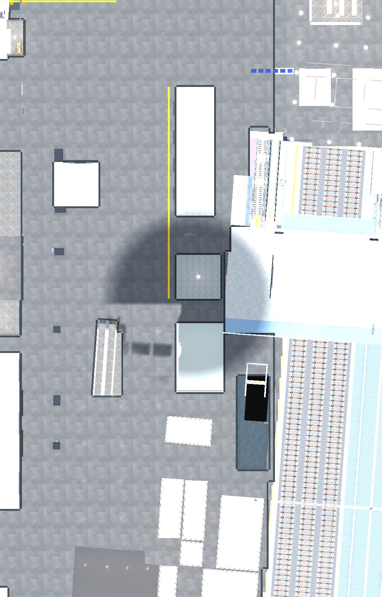
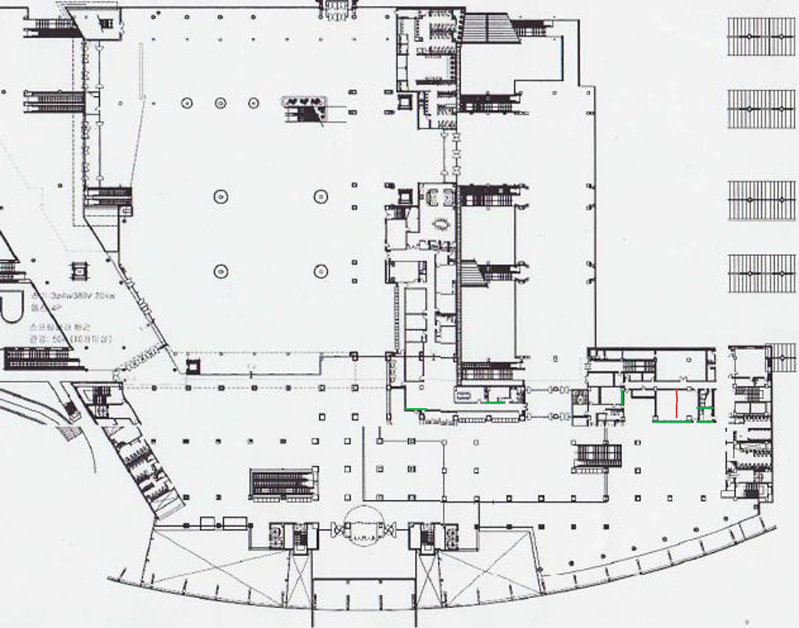

누락 벽 6개 추가 · 잘못된 기존 조각 64개 제거 · 같은 위치와 투영으로 촬영한 Unity 씬


녹색: 추가한 벽 구간. 빨간색: 열린 방을 막던 기존 구획.
실제 플레이어가 두 구간을 양방향으로 총 4회 통과했습니다. 매 이동마다 발밑 9점과 충돌 상태를 검사했습니다.
검증 범위: 표시한 2층 수정 구간. 부산역 전체 내부 유사도는 미검증입니다.